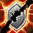
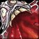
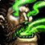

痛苦术士 PvP 判断训练器
这版本唯一要记住的一句
你的伤害不在当下，在接下来的十几秒里。
痛苦术士的判断是什么时候种、种给谁、以及能不能让它走完。
痛苦术士的判断是什么时候种、种给谁、以及能不能让它走完。


为什么？你的伤害是「预订」的，不是「结算」的铺满要时间，被驱散就全没▸这带来两个后果：一是你需要时间铺满，二是这些伤害可以被驱散掉。所以痛苦术士的核心判断从来不是「打谁」，是「能不能让我种下去的东西走完」。
该不该开？勾一下就知道
勾掉几条，就有多少胜算。
开场决策器
现在的局面满足哪几条？
三个时钟
痛苦术士的节奏挂在这三个数字上。
DoT 时钟 · 铺满要几秒这段时间你没什么伤害▸
铺满之前你是全场伤害最低的——这是痛苦术士最脆弱的一段。对面懂行的会在这时候压你。
术士的控制密度是全场顶级的——但恐惧受到伤害会中断，所以要跟队友沟通别打。

生存时钟 · 你比想象中耐打吸血 + 护盾 + 传送门▸痛苦术士不是脆皮——它的问题不是抗不住，是被贴住之后铺不了 DoT。
本版定盘（top50 三对三实测）
英雄天赋：摄魂者 Soul Harvester49/50 走这条，地狱行者只有 1 人▸
摄魂者（Soul Harvester）49/50，地狱行者（Hellcaller）1 人。这不是推荐，是唯一解。
这条线围绕 Demonic Soul 展开——灵魂碎片有几率带上 Succulent Soul，消耗时释放额外伤害。它让你的碎片消耗多了一层随机收益。
Jinx（50/50）—— 全员必带。施放诅咒时同时施加
Impish Instincts（38/50）受到物理伤害缩短
Impish Instincts 的高使用率说明了一件事：被近战贴住是这个专精的主要威胁，所以要靠更频繁的传送门脱身。